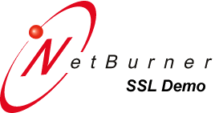

Reloaded This page: Times!
Congratulations! You have completed the NetBurner SSL Demo.
About NetBurner SSL
Secure Sockets Layer (SSL) encrypts and secures data for transmission over the Internet or local network. SSL is an optional software module for the NetBurner development suite. The NetBurner SSL implementation was written from the ground up to provide high performance and a small memory footprint of approximately 90K bytes. The SSL module is integrated with the NetBurner TCP/IP stack and web server, enabling you to add secure web pages to your product with just a few function calls. Unlike 8-bit and 16-bit microcontrollers, the 32-bit NetBurner processor platforms can easily handle the demands of connecting and transmitting data using SSL.